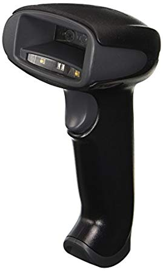

原文连接:https://www.cnblogs.com/guogangj/p/12082681.html
摆在我眼前的是一个急需解决的问题，那就是生成能够被扫描枪正常扫描出中文的二维码。
这事情领导已经交代清楚，这是新客户的需求，公司仓储部能不能接下这个新项目，这一步很关键，尽管前一天我接到这个任务时还感觉它根本不是个问题，但直到现在，这个问题依旧摆在我面前，它真的花费了我一些时间，而我尚未解决它。
二维码
二维码其实是个相对于条形码的概念，条形码是一维的，那二维码自然就是二维的了，虽然二维码有很多种，但我们平常说的二维码99%(甚至无限接近100%)指的就是QR码这种格式的二维码，QR码是一个日本人发明的，他在发明QR码的时候是打算用于工业领域，他当时根本没想到这种二维码能够在中国发扬光大乃至如今是无处不在，确实，QR码是我用过的最好用的二维码，我另外接触的几种二维码，比如DataMatrix，或者PDF417等都是相当不友好的，第一是它们包含的内容受限，不支持汉字，其实这点还好，谁没事会想着把汉字编进码中？第二是它们的容错性太差，稍微的污染、遮挡都让它们识别失败，这点让人难以忍受。QR码还有个好处，就是可以做些花样，比如改改颜色，把头像或LOGO放中间，换个形状，玩法多种多样，如果有的选，我想不出任何使用QR码以外的二维码的理由。
QR码怎么读取？当然是手机扫一扫。
扫出来的东西通常是一串字符，当然了，如何理解这串字符，那就要看扫码软件如何去解读了，如果你用微信扫一扫，它可能把字符识别为一个付款码，或者识别为一个网址，一个公众号链接等，总之世间万物不都可以用一串文字来标识吗？
事实上，QR码中是可以存放二进制数据的，当然了，字符也完全可以按照不同的字符编码转变为二进制数据，所以我们可以理解为：QR码啥都能存，就看你的扫码软件怎么解。
我的QR码生成软件用的是一些开源的代码，再经过自己打磨一番做成的，对汉字的处理，是按照UTF-8编码转为二进制，进而存放到QR码中。不管是微信，还是手机默认的扫码程序，都能顺利检出其中的中文——我认为我生成的二维码是没问题的。
编码
那接下来问题可能就只有一个，那就是编码问题，我使用了UTF-8编码，因为UTF-8是世界乃至宇宙通用的编码，它能容纳下所有人类文字，如果可以选，我想不出任何不使用UTF-8而是使用别的编码的理由。

(UTF-8已经事实上一统江湖)
但由于一些历史惯性，当前有好些中文文本，还是按照GBK编码去做的，GBK即国(G)标(B)扩(K)展，它是对GB2312编码的扩展，但如今说GBK和GB2312其实都是同一回事，有时候简称GB码，是较早期的汉字编码格式。
扫描枪可能不认UTF-8，但认GBK。
用GBK替代UTF-8吗？不，前面做的功能必须要兼容，于是我在我的QR码生成软件中增加了一个选项，允许用户选择QR码的中文编码格式，有UTF-8和GB2312可以选，当然了，默认是UTF-8。功能很快就完成了，但仓储部的试验的结果很快就否定了我这一做法——依旧还是不行。
HID
“扫描枪其实是个HID设备”，这句话是许多年前的一个同事跟我说的，当时公司需要做一个软件，扫描枪一扫条码，它就自动把扫到的内容填入程序的某个输入框中，我当时的问题是：假如我的输入焦点不在要录入的那个输入框中，那我如何识别出这个输入是来自扫描枪的，并做妥当处理？同事说这是不可行的，他解释道：“所谓HID，就是人机接口设备(Human Interface Device)，键盘就是个HID，扫描枪对我们的应用程序来说，跟一把普通键盘没有什么不同，你可以认为它就是模拟个键盘那样，模拟敲击几个按键，把内容带到输入框里。”
(普通扫描枪)
我很快了解了原理，但心有不甘，于是想出了一个投机取巧的办法，能够让程序“智能”识别出这个输入来自扫描枪：我经过观察，发现我们要扫的条码内容的长度是一样的，且前几个字符都是一样的，更关键的是每个字符的录入间隔在20-30毫秒之间，人通过键盘敲击录入的内容绝对不会那么快且间隔均匀，于是有办法了，我弄了一个键盘钩子，捕捉键盘录入信息，根据这个录入的规律来判断一串字符是不是通过扫描枪录入的，接下来就是一些细节处理了，这任务我完成得很出色……这是许多年前的事情了，这件往事堪称workaround的典范，许多年后跟朋友提起这个依然觉得那么有趣。
而今，仓储部的程序并不是我写的，我只是应要求解决他们这么一个问题：如何做出让扫描枪正常扫出中文的QR码？
“不行，我需要一把扫描枪”，于是让人从仓储部捎了一把过来。
说明书
一天后，扫描枪来到了我的办公桌上，我接上电脑后，拿起它随便一扫，嗯？怎么只闻“Bee”声，不见录入，仓储部的人说这是免驱动的，且我也没在设备管理器中看到冲突，很奇怪，我换了几台机器，一模一样，难道是因为仓储部用的是Windows7，而我们用的是Windows10导致的？于是我熟练地打开VMWare，运行起跑着Windows7的虚拟机，将设备连接至虚拟机，然而结果一样，还是不行。于是找驱动程序，这是大厂“霍尼韦尔”的产品，但下载驱动却十分十分不友好，首先是网站打开慢且凌乱，非常不人性化，其次是好不容易找到下载点却提示要注册，再次，注册好之后发觉居然需要它官方的下载器配合浏览器的插件来才能下载！我去！我只是想下个驱动，给我搞出这么多事情来，外企真就是这副德性——傲慢，而且我后面发现我下的驱动安装复杂，更关键的的是根本没法用，我怒气冲冲想卸载它的时候发觉卸载出错……我说我说，那些迷信国外品牌比国产强的，多用脑子想想，我们早已经是一个工业强国，再说扫描枪这种技术含量也不算高的东西难不成真做不好？

(就是这货 霍尼韦尔 Xenon 1900)
我打开设备管理器，发现这个设备被识别为一个串口设备，这也难怪了，于是我打开串口调试工具，打开串口，果然能读取到扫描枪扫描的内容。这支扫描枪并不是HID啊，我默念道……难道仓储部的应用程序有针对串口的编程？问了之后明确回答是没有。那就还只可能有一个原因了：这个扫描枪有不同的工作模式。
于是我费了不少力气找到了它的说明书，果然！它有好几种模式，其中一种是HID模式，这是我们想要的，切换模式通过扫描说明书上的条码来完成。但是又遇到了问题，说明书是电子档的，扫描枪几乎扫不了我屏幕上的内容，于是打印了几张纸，这个任务总算完成了，回头一看时间都过去了几个小时……
在设置完HID模式后，我试了一下，发觉如果QR码中包含了中文的话，扫描枪扫出的内容会跳过中文，但英文和数字是能出来的，很显然，这需要设置扫描枪的字符编码格式，即Encoding，我很快在说明书上找到了相关说明，心想这回总算要大功告成了吧。切换扫描枪的编码格式同样是通过扫描说明书上特定的条码完成，说明书还真的挺重要的。
但接下去我依旧是No luck，中文依旧是扫不出来，当然了，这中间当然免不了多次尝试，一不小心就到了晚上……
不可行
这时候，我只有一个念头，能不能换把扫描枪试试，别用什么国际大牌了，就随便弄个山寨货估计就行了。夜已深，回家了，先不弄了。
在实际的工作中，我发现一个规律，当一个问题苦思冥想得不到解决的时候，常常是去上个厕所，就想到了解决或者变通方案，所以又有一种说法是人在厕所里的大脑是最活跃，思维速度是最快的，你不见那些手游的记录都是在厕所里创造出来的么？只不过这次不是在厕所，只是在回家路上，突然想起了个事情：既然扫描枪和键盘的工作模式一样，那通过敲击键盘的按键，能直接输入中文吗？——这不可能啊，哈哈！我们的中文输入，依赖的是输入法(IME)，而键盘能输入的仅仅是字母数字和一些特殊符号，特殊符号在不同的语言环境下可能有区别，这才有了前面提到的扫描枪的编码格式，这些大多是针对西欧文字的，对于中文，那绝对是无能为力。因此，这从头到尾就是个伪命题啊，我的结论就是：没办法用HID扫描枪扫描出QR中的中文。
接下来的问题就是仓储部客户那边是怎么提出这个需求的？难道他们曾经用HID扫描枪扫描出了QR码中的中文？我直接联系不上客户，而让仓储部去问又说不清，我于是把这个事情如此般描述：不带额外编程的话，扫描枪是扫描不出二维码中的中文的。
当然了，要跟非技术人员讲清楚技术问题是蛮难的，我补充了一句：“原理上不可能。”“知道了，就是说世界上没有一把扫描枪能扫出中文对吧？”这句话相当不严谨，但我觉得我不能再解释下去，否则更加说不清，于是非常肯定地说：“是的。”
Case closed，继续搬砖。